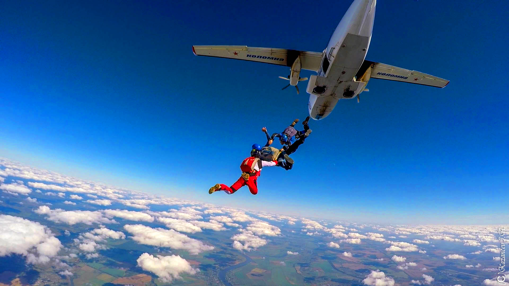

AFF - программа индивидуального обучения
AFF курс– это программа ускоренного обучения прыжкам с парашютом. В настоящий момент она является самым быстрым и в то же время безопасным способом научиться прыгать самостоятельно. Это своего рода «золотой стандарт», принятый во всем мире. Благодаря ей абсолютно любой человек всего за несколько дней может освоить технику свободного падения и управления куполом типа «крыло».
Уникальность программы АФФ в том, что с самого первого прыжка начинающий парашютист попадает в реальные условия. Для этого используется особая студенческая система, единственным отличием которой от спортивного крыла является продублированная система автоматического раскрытия парашюта. В любой момент времени, в воздухе и на земле, рядом со студентом находятся два индивидуальных инструктора. Это означает, что все возможные ошибки исправляются на месте и прогресс идет намного быстрее, нежели в устаревшей классической системе обучения, где инструктор наблюдет из самолета, а ученик остается с чуждой человеку средой один на один.
Высота каждого прыжка – 4000 метров. При этом чистое время свободного падения составляет 60 секунд. Иначе говоря, целая минута на то, чтобы отработать все тренировочные элементы. Это позволяет существенно сэкономить время, а значит и деньги, на обучение. Все учебные прыжки фиксируются на видеокамеру и тщательно анализируются на замедленном повторе. Такая «работа над ошибками» помогает лучше подготовиться к следующему прыжку, полностью исключив закрепление неправильных навыков.
В соответствии с требованиями обучение по системе AFF в Москве подразумевает минимум 16 самостоятельных прыжков. Точная цифра во многом зависит от того, насколько серьезно студент относится к наземной подготовке. Она весьма насыщенная, поскольку известная авиационная мудрость гласит: МАСТЕРСТВО В ВОЗДУХЕ КУЕТСЯ НА ЗЕМЛЕ!
Из чего состоит курс обучения прыжкам АФФ
Вся программа разделена на 7 уровней
Задача первых трех – дать студенту базовые навыки свободного падения. Прежде всего это умение безопасно покидать самолет или вертолет, контролировать положение тела в свободном падении, следить за показаниями приборов и, наконец, вовремя раскрывать парашют. На всех этапах рядом с учеником находятся одновременно два инструктора.
Уровни с третьего по седьмой посвящены выполнению различных маневров в воздухе.
Студент учится «подходить» к инструктору, разворачиваться вправо и влево, делать спирали и сальто, при этом не забывая ориентироваться в воздухе и следить за высотой.
На третьем этапе (так называемый АФФ-8) студент закрепляет навыки самостоятельного планирования и выполнения прыжков и знакомится с азами групповой акробатики.
Один уровень – это либо один прыжок, либо столько, сколько необходимо для получения результата. Дело в том, что главным критерием при обучении является безопасность, поэтому переход на следующий уровень происходит лишь тогда, когда выполнены все задания предыдущего.
I ЭТАП «ПЕРВЫЕ НАВЫКИ»
1 уровень. Выполнению прыжков предшествует плотная наземная подготовка, занятия на тренажерах. Первый прыжок осуществляется в тандеме, второй – с двумя инструкторами АФФ. Основная задача – впервые самостоятельно раскрыть парашют и приземлиться. Приземлением руководит инструктор с помощью встроенной в шлем студента радиосвязи.
2 уровень. Прыжок с двумя инструкторами, направленный на отработку необходимых навыков свободного падения.
3 уровень. Впервые на несколько секунд оба инструктора отпускают студента, чтобы убедиться в его умении контролировать положение тела в воздушном потоке. По завершении этапа студент должен уметь контролировать приборы, сохранять стабильную позу в свободном падении, раскрывать парашют строго на заданной высоте, безопасно приземляться используя подсказки инструктора.
Пилотирование
4 уровень. Начиная с этого этапа, прыжки выполняются с одним инструктором. Студенту предстоит освоить контролируемые вправо и влево, движение вперед, приземление в радиусе 50 м от заданной точки.
5 уровень. по спирали на 360 градусов в обе стороны, контроль за положением тела во всех плоскостях.
6 уровень. Самостоятельное отделение от летательного аппарата, заднее сальто, приземление в радиусе 25 м от точки.
7 уровень. Основная цель – самостоятельные грамотные действия при подготовке прыжка, отделении, выполнении переднего сальто и комплекса других упражнений. Управляя куполом, студент должен продемонстрировать понимание основных принципов его пилотирования и безопасного приземления. К концу второго этапа студент знает, как подготовить снаряжение, ознакомлен с правилами поведения на аэродроме и непосредственно во взлете, умеет предотвращать беспорядочное падение и стабилизироваться до нейтрального положения из любой ситуации, приземляется в нужной точке.
III ЭТАП «ПОЛУЧЕНИЕ ЛИЦЕНЗИИ»
- минимум 4 прыжка с инструктором
- минимум 4 самостоятельно
- в том числе 1 с высоты до 1500 м